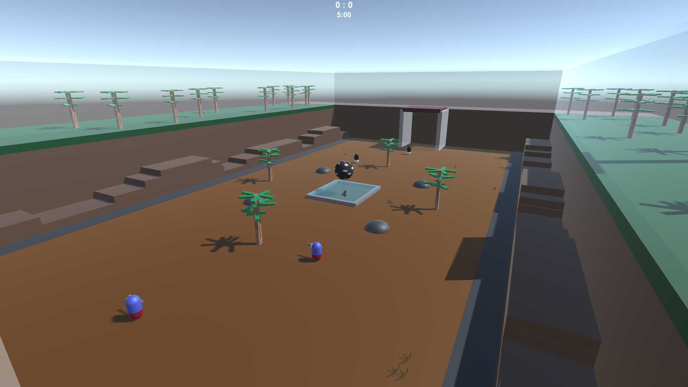

Sportsball
This is my progress blog on this game that i decided to make.
last updated : 09/04/2018
Back To Main Page
last updated : 09/04/2018
Back To Main Page
Hooray for new updates!!! There's a bit to go through here so im just gonna rush through it. First off, i got some updated gameplay footage ready, which you can see above. Secondly i got rid of the season mode. Because it was broken as hell. I've replaced it with two brand new modes however:

Training/Mission mode are quite similar. With the main difference being that you can fail in mission mode. Selecting a map works the same way that Free Play does, and the premise of these modes are for practice and to teach the players about certain techniques you can do in the game.


I've also added some sounds into the game, which is better viewable in the video above. Lastly, I've added a new map into the game.

I've also added in a couple new jerseys and some other small adjustments here and there.
09/04/2018

Here it is, my first major update. The Aesthetics update. This build is now available for download. In this post i will run through some before and afters of the art in this game and some of the new additions. The first is obviously the new jerseys, below is a before and after of how they look in game.

There is currently 13 different jerseys that can be selected in the ready up screen. Each jersey comes with a unique paint splat pattern. Splat patterns now only last for 15 seconds before they are destroyed.

The Magpies' Jersey paint splat pattern
The next change is the ready screen, which has had a little update to include customization & become a little more clearer.

The last big change to talk about is the new main menu screen. This new screen removes the boring bland yellow background and adds footage of Ai shooting a sportsball repeatedly & infinitely. There's also now scrolling news text at the bottom, which will be used to annouce updates and such.

There's also a lot more smaller art updates that you'll notice whilst playing. The next thing that i want to talk about is the new map "Sector 14a".

"Sector 14a" is a small inclosed map which hopefully shakes up the gameplay enough to become interesting. Firstly you'll notice that the goals are higher up then usual. This will hopefully encourage use of the maps main feature, "Launchpads". Yep, launchpads, step on one of these beautys and you'll be sent flying upwards, which you can use to access higher places.
Lastly, i've added map intros the game, so that when you load up a map you're not instantly thrown into the game.

That's it for now, i'll try to get a video up soon, which will show the changes from the first public build i had available. Until then, happy playing, and have fun checking out all the new art in the game.
03/04/2018
A Little splash of colour. So as this picture suggests i've updated the art on the players. I've also added a bit of customization, in which you can choose what colour your team is before you play in "Free Play" mode. I've also got some other aesthetic changes to show later on. I'll have a new video up in a week or so which will showcase a majority of the changes since the first protoype.
Oh yeah, and im also working on a new map, which will incorporate new gameplay elements, so stick around for that.
29/03/2018

Hooray two updates in a day! First thing of note is that i've updated the download link to have (a.o.w) the most updated build of the game that possibly exists. Secondly, since the last update i've tweaked the season mode a little, as well as adding in two maps into the map selections (one new, one old).
27/03/2018
Welcome to the official Sportsball blog post page. This is my first blog post but there's been already been quite a bit of progress made in the game, so i'm going to quickly do a run down of what the game currently has:
-Support for 1-4 players (all must be using controller though)
-AI players (however a.o.w they are pretty simple)
-Free Play mode with two choosable maps
-The begining of a season mode
-A Replay system for when goals are scored
-A MVP system
-Paint splats
So far the game is very basic in it's art and has no sounds. However expect that sometime later this will change. Just probably not for a while. a.o.w. The majority of focus for development is in improving both the AI and season modes.
Anyways, i'm not going to make a large post here. I hope that i stick to this game enough to make something great. I'll update the download link once i have a build i deem publishable. Until then, the current download link will have a earlier build, which will require two players (both using controllers) to play.
Love, from Callum 27/03/2018